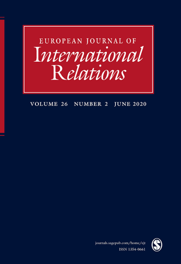

收录于合集
作品简介
【作者】 David C. Kang 康灿雄，美国南加州大学国际关系与贸易教授、韩国研究所主任。研究方向为东亚国际关系，涵盖该东亚经济发展和安全关系，以及当前国际关系的历史根源等问题。
【编译】 邵良（国政学人编译员，中国人民大学）
【审校】 李博轩 姚寰宇
【排版】 苏语涵
【美编】 聂涵琳
【来源】 Kang, & D., C. (2014). Why was there no religious war in premodern east asia? European Journal of International Relations, 20(4), 965-986.
期刊简介

《欧洲国际关系杂志》（European Journal of International Relations）发表国际关系各个领域经过同行评议的学术文章，包括前沿的理论辩论，以及国际关系学者和实践者感兴趣的当代和历史话题。该杂志避免倾向于或局限于任何特定的学派、方法或方法论。
为什么近代以前的东亚没有宗教战争？
Why was there no religious war in premodern East Asia?
David C. Kang 康灿雄
内容提要
前现代的东亚各国，如朝鲜、日本、越南和中国，尽管有着如儒学、佛教、道教和其他许多民间宗教，却很少经历欧洲历史上长期以来存在的那种宗教战争。历史上东亚地区宗教战争的匮乏问题在理论上很重要，因为它挑战了大量已有的学术文献，这些文献从基督教和伊斯兰教的经验和数据中发现宗教和战争之间普遍存在因果关系。作者认为，东亚历史上的包容性宗教不容易作为划分敌我或为暴力辩护的工具被政治领导人利用，这种类型的宗教传统可能也不太容易引发大规模的暴力动员。将东亚宗教传统与战争的关系考虑进来，既有助于解决一个潜在的严重选择偏差问题，也有助于为分析宗教与战争之间的关系提供更充足的理论依据。
文章导读
01
宗教战争的缺失
东亚历史上有很多战争，但它们往往不是宗教战争。在14世纪到19世纪之间，东亚几乎没有经历过在同一时期主导欧洲的宗教战争和叛乱。不仅国与国之间没有宗教战争，而且明显没有出于宗教动机的内部叛乱。白莲教起义也许是近代中国历史上最广为人知的宗教起义，但其目标在本质上是政治和经济的，并没有将任何类型的新的宗教秩序强加给整个社会的意图。
考虑到几个世纪以来欧洲发生了大量的宗教战争，东亚历史上宗教战争的缺乏是一个谜。那么，我们如何解释宗教战争模式的地区差异呢？我们如何解释一个地区的宗教通常不会卷入战争和叛乱？在这篇文章中，作者认为一个关键因素是排他性宗教和包容性宗教之间的区别。这两种宗教与信徒的关系不同，与国家的关系也不同。排他性宗教只包括一种模式，有明确的文本、机构、领袖和成员。然而，事实上宗教有多种模式，其中包容性宗教从定义来看没有明确的边界。包容性的宗教传统包括许多不同的神，甚至可能是许多不同类型的神。其既没有明确的制度化等级结构、领袖或文本，也没有固定的成员。排他性宗教有明确的信徒和目标，与之相对，包容性宗教难以成为追求利益的政治集团的社会标志（social markers）。具体地说，作者认为历史上在东亚占主导地位的包容性宗教——佛教、儒学、道教和众多民间宗教——不容易被政治领导人作为划分敌我或为战争辩护的手段。
历史上东亚国家的经验为以下论点的合理性提供了一个有用的检验：不同类型的宗教信仰可能影响其追随者的战争行为的规模和强度。一些学者认为，宗教对战争没有影响，它只是一种借口、理由或对战争根本原因的误认。其他人如亨廷顿则认为宗教是解释某些类型冲突的核心。然而作者认为，并非所有的宗教都是一样的。通过强调包容性和排他性宗教之间的区别，本文提出的证据可以得出这样的结论：包容性宗教不太可能引发与宗教战争有关的大规模暴力。
02
东亚的包容性宗教
解释为什么东亚没有宗教战争，需要解决一个中心问题：包容性宗教是什么样子？重要的是要避免将东亚宗教本质化，认为它们是永恒不变的思想体系。这些宗教传统不仅具有可塑性和因地制宜的特点，而且还融合了许多不同的宗教思想、习俗和神灵。儒学、道教和佛教，其传统在时间和空间上差异很大，也包含了许多不同的分支。
西方对宗教正式的、集中的、制度化的定义和形象产生于与东亚宗教传统不同的历史经验。东亚的宗教传统更符合师徒模式，许多互不相关的教师提供各种不同的方法，因此很难分类。在佛教、道教或儒学中没有中央集权的秩序。相反，在宗教、知识、哲学和社会传统方面，存在着不同的学派。在每一本书中，都有哲学、玄学、艺术和人文思想的混合，它们使用了不同的文本，它们之间的界限并不明确。这样一来，相比于界限分明的基督教和伊斯兰教，东亚的这些“教诲”与茶道、武术、书法以及其他人文追求有更多的共同点。
儒家思想，甚至佛教和道教，是否可以被视为等同于基督教和伊斯兰教的“宗教”？这是一个因为缺乏西方式标准定义而产生的长期问题。尽管儒学最终成为东亚哲学和神学的主导传统，但它仍然具有包容性和融合性。儒学与佛教、道教和其他民间宗教相互影响、相互借鉴。儒学、佛教和道教，被称为“教诲”（jiao），而不是独立于其他知识范畴的宗教。要谈论宗教思想或宗教脉络的融合，特别是在讨论“中国三教”时，任何学者都必须承认，中国人有可能同时属于这三个体系。总之，东亚宗教传统之间、宗教传统与其他知识和哲学传统之间的区别，比西方要模糊得多。这些东亚传统宗教既没有中央集权的机构等级和领导，也没有使用一套规范的文本。它们不是一种社会标志，不能划分民族群体，因此很少被用来组织政治或社会运动。
03
道德权威：历史上东亚的宗教与政府
宗教为什么不能导致战争的问题，不仅涉及宗教传统的实质，而且涉及宗教传统与信徒同国家互动的方式。宗教和国家之间的区别，以及对欧洲历史和当代世界十分重要的宗教成员身份的明确，在近代以前的东亚显然是不存在的。相比之下，至少从周朝（前1046年-前256年）开始，东亚地区的统治者被视为天地之间的合法中介，从事仪式和祭祀活动。最明显地体现在“天命”的概念中，统治者的合法性和统治权是基于他的道德权威和上天的祝福。上天会保佑一个公正的统治者。天命是一个宇宙观的总称，既不是儒家的，也不是佛教的或道教的，它预示着这些后来的宗教传统。统治者的宇宙角色是如此的重要，以至于礼部是中国、朝鲜和越南仅有的六个政府部门之一。
04
作为道德权威的仪式与国家崇拜
作为人类与神沟通的中心，统治者直接负责进行大量的宗教仪式和祭祀活动。“天命”代表的合法性体现在稳定的政治和社会秩序中，而不稳定的局势会挑战统治者的权威。叛乱、饥荒或其他灾难被视为统治者失去了“天命”的迹象。在日本，尽管13世纪时日本放弃了模仿中国制度的尝试，但日本天皇的一个主要职能也是举行类似的仪式。在近代以前的东亚，国家的道德权威是建立在宗教观念之上的，这些观念与许多不同的宗教传统相互作用。
05
包容性政治和宗教传统
“天命”和东亚宗教传统的融合性意味着，即使儒家思想 成为统治者统治的主导思想，众多宗教和哲学思想之间仍然存在着显著的混合和互动。皇帝可以同时是两种不同宗教传统的热心支持者和推动者。与此相反，在中世纪基督教世界的欧洲，很难想象一个神圣罗马帝国皇帝会私下参加犹太教或伊斯兰教的仪式。
06
国家对宗教机构的控制
当东亚国家与宗教传统互动时，例如管理各种各样的佛教寺庙，其目的不是控制教义的内容，而是征收税款，迫使它们以类似于其他民事机构的方式与国家互动。
在越南、日本、朝鲜和中国，政府对儒学的偏爱并没有导致对佛教徒的大规模杀戮、讯问或狂热的暴力，更多的是在法律和制度上的限制。对佛教的打压的规模和强度与14-17世纪发生在欧洲的天主教徒、新教徒和犹太人之间的相互冲突完全不同，而且暴力程度更低。此外，几乎没有不同儒家或佛教教派之间发生暴力事件的记录，也没有证据表明有人试图强迫其他国家接受不同的信仰。
07
结论与启示
本文的研究结果为进一步的研究提供了一些启示。或许最具挑战性的是，包容性宗教传统与缺乏宗教战争之间的经验性关系在东亚以外的时空还能否成立？即使在今天，宗教仍然是东亚政治生活中一个相对不重要的方面。韩国和日本的选举明显缺乏宗教讨论或对政治家宗教信仰的担忧。即使是在韩国这样相对宗教化的社会，人们也很难找到证据证明一个佛教候选人或一个基督教候选人能够吸引不同类型的选民。这与美国形成鲜明对比。
解释东亚宗教传统在现代是如何转变和演化的，可以深入了解东亚当代政治的本质。在探讨宗教与政治的关系时，扩大案例的范围，把东亚宗教纳入进来，可能会在许多方面挑战或扩展已有的各种宗教政治理论。
译者评述
如果跳出宗教与暴力的关系，看一看宗教在其他方面的影响，作者所提出的东亚“包容性”宗教传统，以及其所关注的东亚宗教战争的缺失，对东亚自身来说未必是一件好事。
首先，从哲学角度来说，“排他性”宗教意味着对真理唯一性的承认。而承认真理的唯一性，是现代科学得以出现的前提。所谓“人的有限的理性应该避免僭越的狂妄,必须随时准备接受上帝创造的新事实 ,驯服地遵从上帝亲自撰写的这本大自然之书。这意味着尊重从事实出发的、无止境的科学认识, 意味着不能用既定的理性法则来要求新的事实, 只能服从于已知的和确实存在的事实，而不管其是否符合理性。只有承认事实, 承认无知, 才有可能去探索以求得真知。”[1] 英国科学家赫胥黎也说过，“在我看来科学似乎是以最崇高、最有力的方式传授伟大的真理，而这种伟大的真理正是体现在完全服从上帝意志的基督教观念之中：像幼童般面对事实，随时准备放弃任何先入之见，谦恭地跟随自然的引导，即使是坠入深渊也在所不惜。否则，你就将一无所获。”[1]因此，中国宗教的“包容性”，或许可以作为“李约瑟难题”的答案之一。试问，如果一个文明支持日心说的同时还支持地心说，并且这两种学说还相互融合，现代科学还有可能诞生吗？
第二，从文化价值观角度来说，“宗教战争”代表着为真理而殉道的精神。正是这种精神推动着宗教改革、启蒙运动、法国大革命，以及其他种种西方现代化进程中里程碑事件的出现。中国缺乏“宗教战争”的背后，是几千年来历史的简单循环：人们参战只是因为“王侯将相宁有种乎”，战争的结果不过是“成者王侯败者贼”而已。所谓“既然农民起义或农民战争……不具有推翻封建制度的明确目的，而仅是出于求生本能的自发的反抗，那么，农民起义或农民战争的主观目的，当然也就不可能是推翻封建制度;农民起义或农民战争在客观上所肩负的历史使命，也就不应该是推翻或改造封建的经济关系和封建的政治制度。”[2]
最后，从现实政治角度来说，没有“正式的、集中的、制度化的”宗教制衡君主的权力，古代东亚各国想要诞生出《大宪章》这样把君主权力放进笼子里的制度创新，也就是天方夜谭了。正如阿克顿所说，“在古代世界里，国家执行着教会的职责。国家把政教两大功能合二为一到自己手中。是基督教把政教两大功能分离开来，这是一个伟大的变化。这种变化在政治上产生的显著行为就是对权威施加限制。”[3] 与此相对，在中国古代历史上，“政治权力支配着社会的一切方面，支配着社会的资源、资料和财富，支配着农、卜、商业和文化、教育、科学、技术，支配着一切社会成员的得失荣辱甚至死生。”[4]
参考文献
[1] 田薇.试论基督教和科学的关系——从霍伊卡《宗教与现代科学的兴起》谈起[J].学术月刊,2001(02):21-27.
[2] 李振宏.论中国历史上农民战争的历史结局[J].史学月刊,1999(05):3-5.
[3] [英] 阿克顿.自由与权力–阿克顿勋爵论说文集[M].侯健,北京:商务印书馆,2001:343。
[4] 刘泽华,汪茂和,王兰仲.专制权力与中国社会[M].长春:吉林文史出版社,1988:258.

文章观点不代表本平台观点，本平台评译分享的文章均出于专业学习之用, 不以任何盈利为目的，内容主要呈现对原文的介绍，原文内容请通过各高校购买的数据库自行下载


好好学习，天天“在看”

国政学人
支持学术公益与知识传播
微信扫一扫赞赏作者 __赞赏
已喜欢，对作者说句悄悄话
取消 __
发送给作者
发送
最多40字，当前共字
上一页 1/3 下一页
长按二维码向我转账
支持学术公益与知识传播
受苹果公司新规定影响，微信 iOS 版的赞赏功能被关闭，可通过二维码转账支持公众号。